Getting started with robust systematic conservation planning
Source:vignettes/robust.prioritizr.Rmd
robust.prioritizr.RmdIntroduction
Most systematic conservation planning problems require users to parameterize planning unit data and costs based on statistical models or future projections that are bound to contain uncertainty. For example, conservation planning problems that involve designing protected areas that are resilient across future climate change have to ensure that the targets are met not just only one predicted scenario, but also across most plausible climate scenarios. Likewise, conservation planning problems that involve the use of predictions from species distribution models carry uncertainty that, if ignored, can mean that targets of the conservation planning problem are frequently violated.
Motivation
To illustrate the extent of the issue, we consider a simplified
conservation planning problem with a minimum set objective. It contains
100 planning units with equal costs, 2 features, and an absolute target
of 30. We focus on feature_1 in this example. Across all
planning units, feature_1 is an uncertain value that takes
a normal distribution of mean 1 and standard deviation 0.2. Suppose the
researcher does not know this underlying distribution, goes into the
field and obtains an estimate of feature_1 as a random draw
from the distribution for use in the planning problem. In other words,
the value of feature_1 in some planning units are
overestimated (above 1), and some are underestimated (below 1).
feature_2 does not have uncertainty and takes on the value
1.5 across all planning units.
We solve this problem in prioritizr.
set.seed(500)
mu <- 1
sigma <- 0.2
N <- 5
target <- N*2
feature_1 <- matrix(rnorm(100, mean = mu, sd = sigma), nrow = N, ncol = N)## Warning in matrix(rnorm(100, mean = mu, sd = sigma), nrow = N, ncol = N): data
## length differs from size of matrix: [100 != 5 x 5]
feature_2 <- matrix(1.5, nrow = N, ncol = N)
sim_features_not_robust_raster <- c(rast(feature_1),
rast(feature_2))
names(sim_features_not_robust_raster) <- c("feature_1", "feature_2")
pu <- matrix(1, nrow = N, ncol = N)
sim_pu_raster <- rast(pu)
names(sim_pu_raster) <- c("Cost")
p1 <- problem(sim_pu_raster, sim_features_not_robust_raster) %>%
add_min_set_objective() %>%
add_absolute_targets(target) %>%
add_binary_decisions() %>%
add_default_solver(verbose = FALSE)
s1 <- solve(p1)
names(s1) <- c('solution')
plot(c(sim_features_not_robust_raster, sim_pu_raster, s1))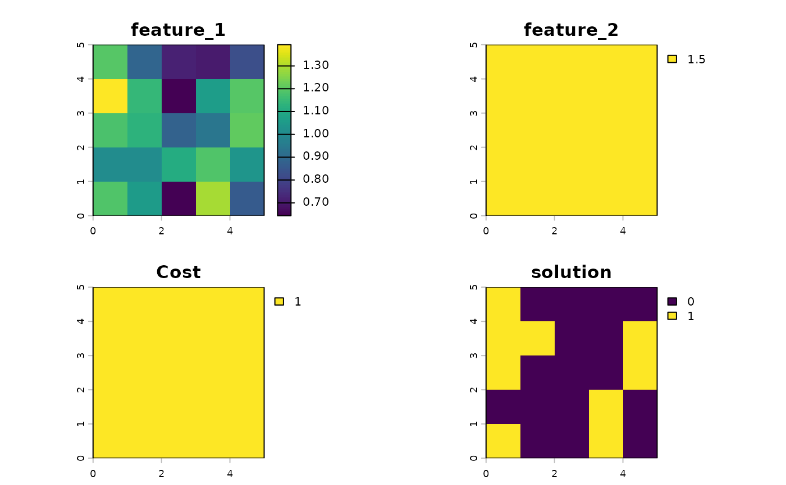
In the prioritization process, planning units that have a higher
number of feature_1 in the planning unit will be selected
over other planning units with less of feature_1. As shown
below, prioritizr selects the planning units with the
highest estimated number of features.
df <- data.frame(
feature_1 = values(sim_features_not_robust_raster[[1]]),
solution = values(s1)
)
df %>%
arrange(feature_1) %>%
mutate(selected = if_else(solution == 1, "Yes", "No")) %>%
mutate(rank = nrow(.)-row_number()+1) %>%
ggplot(aes(x = rank, y = feature_1, fill = selected)) +
geom_bar(stat = 'identity') +
labs(x = "Rank of Feature 1", y = "Feature 1 value", fill = "Selected") +
theme_bw() +
theme(panel.grid = element_blank())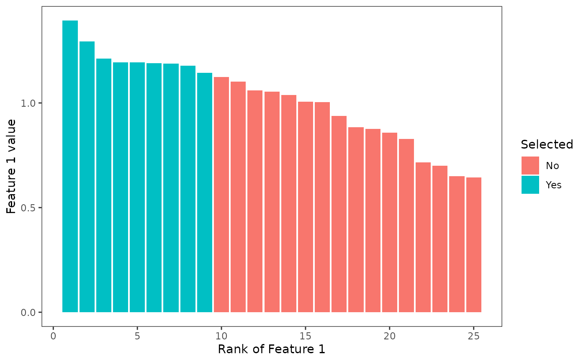
This would give desirable results if the estimate of the number of features in planning units are accurate and do not carry uncertainty. However, when the number of features in the planning units are not perfect estimates, we can see that the constraint could be violated. In this synthetic case, we know that the number of features in each planning unit all follow the same distribution, which means that the variations we see across features are only caused by estimation error and does not represent underlying variations in the planning units’ features. Planning units that were selected here were only those with an overestimated number of features (number of features greater than 1).
If uncertainties in features are not accounted for, a prioritization problem would overwhelmingly select planning units with over predicted number of features. This will cause the solution to be over-optimistic about the targets we can achieve with our planning solution. There is a good chance that the target constraints will be violated in practice.
To see this, we generate 500 realizations of feature_1 from the same distribution and evaluate how good our solution is across each of these realizations. We can estimate how likely it is that our solution violates the target constraint.
# Number of simulations
n_sims <- 500
sim_feature_1 <- replicate(n_sims, matrix(rnorm(N^2, mean = mu, sd = sigma), nrow = N, ncol = N)) %>%
rast
feature_1_outcomes <- sim_feature_1 * s1
feature_1_targets <- values(feature_1_outcomes) %>%
apply(2, sum) %>%
unname
expected_target <- sum(df$feature_1 * df$solution)
data.frame(feature_1 = unname(feature_1_targets)) %>%
mutate(violated = if_else(feature_1 < target, "Below target", "Above target")) %>%
mutate(violated = factor(violated, c("Below target", "Above target"))) %>%
ggplot(aes(x = feature_1, fill = violated)) +
geom_histogram(color = 'white', bins = 30) +
theme_bw() +
geom_vline(xintercept = target, linetype = 2) +
geom_vline(xintercept = expected_target, color = '#009e73') +
scale_fill_manual('', values = c('#d55e00', '#0072b2'), drop = FALSE) +
theme(panel.grid = element_blank())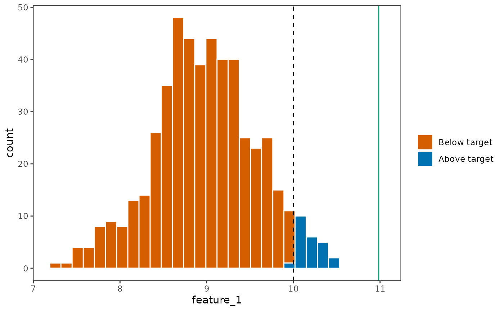
The green vertical line depicts where we expected
feature_1 to be, and the orange bars shows the distribution
of where feature_1 would actually be. We can see that the
planning solution identified violated the target for
feature_1 in most of the realizations we draw from the
statistical distribution.
Why did the planning solution violate the constraint in such a large
number of realizations, even though it was solved using an unbiased
estimate of feature_1? This is because in the
prioritization process, the planning units with an overestimate of
feature_1 would be disproportionately selected, as it
appears that these planning units have more features.
In what operations researchers call the “Curse of Optimality”, the prioritization process could amplify errors that are present in the data, selectively choosing planning units with overestimated features or underestimated costs. If robust approaches are not used, the planning solution is likely to violate targets, leading to solutions that disappoint and fall far behind what we want from the prioritization process.
Robust minimum set objective
To parameterize the uncertainty in the features, we need to supply
the counts of each feature under each of the realizations we have
simulated. The core of the robust.prioritizr approach is
the use of groupings, that tell the algorithm which
## Note: here I exploited the fact that the min set objective does not actually use the feature groupings behind the scenes
## Note: add_relative_targets will be a bit tricky to interpret as the "number of features" in each realization is different... will need to override with the max of the group (i.e. relative to the maximum of number of features across all realisations), or the mean... need to be transparent
sim_features_robust_raster <- c(sim_feature_1, rast(feature_2), rast(feature_2))
names(sim_features_robust_raster) <- c(paste0(rep('f1_', nlyr(sim_feature_1)),1:nlyr(sim_feature_1)),
'f2_1', 'f2_2')
feature_groupings <- c(rep('f1', nlyr(sim_feature_1)), 'f2', 'f2')
p2 <- problem(sim_pu_raster, sim_features_robust_raster) %>%
add_constant_robust_constraints(groups = feature_groupings,
conf_level = .9) %>%
add_absolute_targets(target) %>%
add_robust_min_set_objective(method = 'cvar') %>%
add_binary_decisions() %>%
add_default_solver(verbose = FALSE)
s2 <- solve(p2, force = TRUE)
soln <- c(s1, s2)
names(soln) <- c("Non-robust Solution", "Robust Solution")
plot(soln)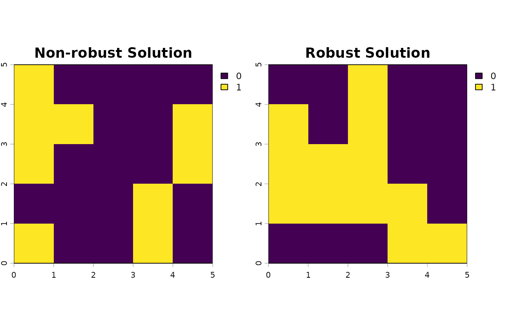
Using the same approach, we can evaluate the representation of the
new solution s2 across all the realizations of Feature
1.
feature_1_targets_robust <- values(sim_feature_1 * s2) %>%
apply(2, sum) %>%
unname
data.frame(`not_robust` = unname(feature_1_targets),
`robust` = unname(feature_1_targets_robust)) %>%
tidyr::pivot_longer(c('not_robust', 'robust'), names_to = 'name', values_to = 'values') %>%
mutate(name = factor(name, c('not_robust', 'robust'), c('Non-Robust', 'Robust'))) %>%
mutate(violated = if_else(values < target, "Below target", "Above target")) %>%
mutate(violated = factor(violated, c("Below target", "Above target"))) %>%
ggplot(aes(x = values, fill = violated)) +
geom_histogram(color = 'white', bins = 30) +
theme_bw() +
geom_vline(xintercept = target, linetype = 2) +
geom_vline(xintercept = expected_target, color = '#009e73') +
scale_fill_manual('', values = c('#d55e00', '#0072b2'), drop = FALSE) +
facet_wrap(vars(name), ncol = 1) +
theme(panel.grid = element_blank())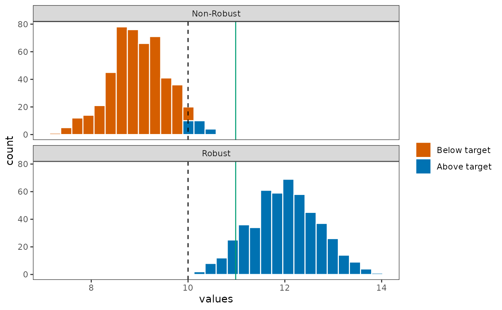
The representation of Feature 1 is dramatically improved when evaluated across the entire distribution of Feature 1, with all realizations having Feature 1 representation above the target value.
Robust minimum shortfall objective
Likewise, the problem can be solved for a minimum shortfall objective, where the objective is to minimize the weighted average of the shortfall between the species representation target of each feature to its target.
We demonstrate this first with the use of the standard (not robust)
use of prioritizr, focusing again on minimizing the
shortfall of feature_1 to the target.
budget <- target*2
p3 <- problem(sim_pu_raster, sim_features_not_robust_raster) %>%
add_absolute_targets(target) %>%
add_min_shortfall_objective(budget = budget) %>%
add_binary_decisions() %>%
add_default_solver(verbose = FALSE)
s3 <- solve(p3)
plot(s3)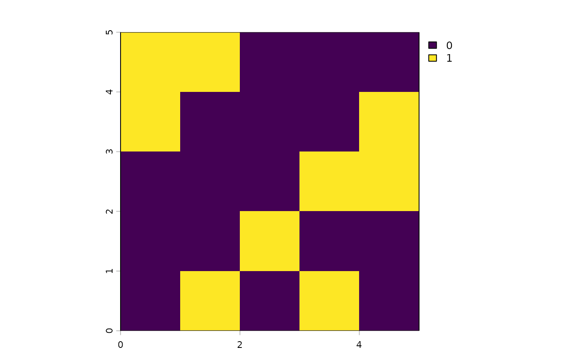
Using the same approach as before, we evaluate the full distribution
of possible representations of feature_1 across the
realizations we have simulated above.
feature_1_outcomes <- sim_feature_1 * s3
feature_1_targets <- values(feature_1_outcomes) %>%
apply(2, sum) %>%
unname
representation_summary <- eval_feature_representation_summary(p3, s3)
expected_target <- representation_summary[
representation_summary$feature == 'feature_1',
'absolute_held'
] %>%
as.numeric
data.frame(feature_1 = unname(feature_1_targets)) %>%
mutate(violated = if_else(feature_1 < target, "Below target", "Above target")) %>%
mutate(violated = factor(violated, c("Below target", "Above target"))) %>%
ggplot(aes(x = feature_1, fill = violated)) +
geom_histogram(color = 'white', bins = 30) +
theme_bw() +
geom_vline(xintercept = target, linetype = 2) +
geom_vline(xintercept = expected_target, color = '#009e73') +
scale_fill_manual('', values = c('#d55e00', '#0072b2'), drop = FALSE) +
theme(panel.grid = element_blank())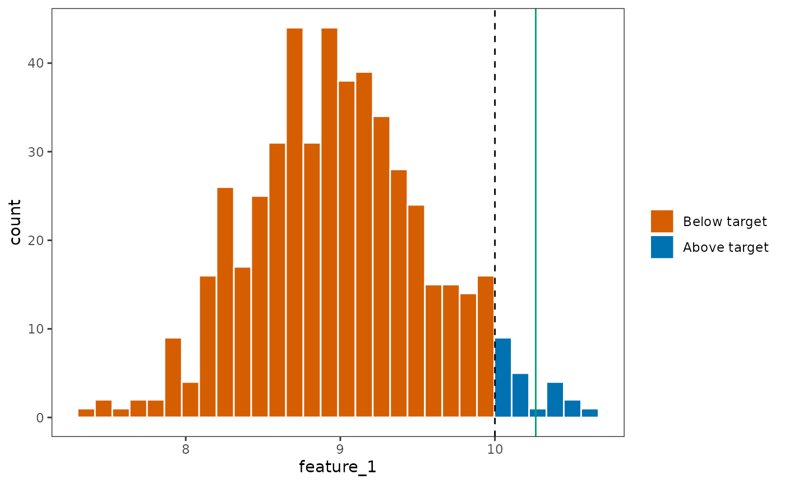
Observe that while prioritizr sees
feature_1 as being achieved at the expected target,
indicated in the green line, the actual representation as simulated from
the distribution is nowhere near the expected level. This implies that
the shortfall metric used in the standard prioritizr is an
under-representation of the shortfall target.
Now, let’s observe how the solution will differ if we instead used
robust approaches. In this robust approach, the shortfall is instead
quantified as the minimum value in the distribution of representation
for feature_1.
p4 <- problem(sim_pu_raster, sim_features_robust_raster) %>%
add_constant_robust_constraints(groups = feature_groupings, conf_level = 1) %>%
add_absolute_targets(target) %>%
add_robust_min_shortfall_objective(budget = budget) %>%
add_binary_decisions() %>%
add_default_solver(verbose = FALSE)
s4 <- solve(p4)
plot(s4)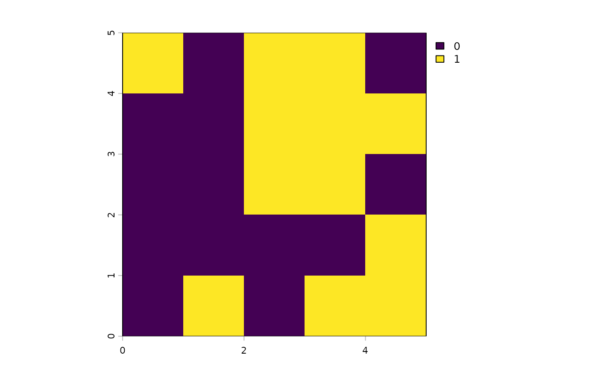
Importantly, the relative improvement of the solution here will be limited by the budget constraint that was imposed on the function.
feature_1_targets_robust <- values(sim_feature_1 * s4) %>%
apply(2, sum) %>%
unname
representation_summary <- eval_feature_representation_summary(p4, s4)
expected_robust_target <- representation_summary %>%
filter(substr(feature, 0, 2) == 'f1') %>%
summarise(absolute_held = min(absolute_held))
expected_robust_target <- as.numeric(expected_robust_target)
plot_df <- data.frame(`not_robust` = unname(feature_1_targets),
`robust` = unname(feature_1_targets_robust)) %>%
tidyr::pivot_longer(c('not_robust', 'robust'), names_to = 'name', values_to = 'values') %>%
mutate(name = factor(name, c('not_robust', 'robust'), c('Not Robust', 'Robust'))) %>%
mutate(violated = if_else(values < target, "Violated", "Not violated")) %>%
mutate(violated = factor(violated, c("Violated", "Not violated")))
plot_df %>%
ggplot(aes(x = values, fill = violated)) +
geom_histogram(color = 'white', bins = 30) +
theme_bw() +
geom_vline(xintercept = target, linetype = 2) +
geom_vline(data = filter(plot_df, name == 'Not Robust'), aes(xintercept = expected_target),
color = '#009e73') +
geom_vline(data = filter(plot_df, name == 'Robust'), aes(xintercept = expected_robust_target),
color = '#0072b2') +
scale_fill_manual('', values = c('#d55e00', '#0072b2'), drop = FALSE) +
facet_wrap(vars(name), ncol = 1) +
theme(panel.grid = element_blank())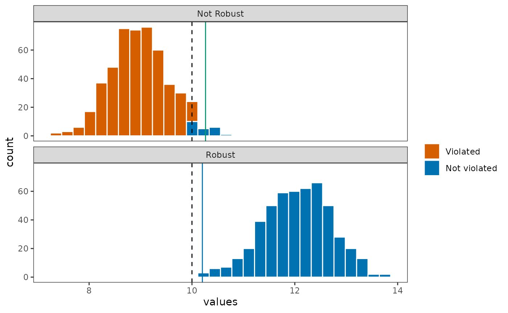
The robust approach is able to find a solution that has a much higher probability of reaching the species target because it is accurately able to use the minimum, or the worst-case, realization in the data to identify the solution with the least amount of shortfall.
Though it is important to recognize that the amount of improvement that are yielded by a robust solution is dependent on other constraints being imposed on it. Consider these alternative problems with the same formulation, but a much smaller budget.
# Use a small budget
small_budget <- 5
# Not robust version
p5 <- problem(sim_pu_raster, sim_features_not_robust_raster) %>%
add_absolute_targets(target) %>%
add_min_shortfall_objective(budget = small_budget) %>%
add_binary_decisions() %>%
add_default_solver(verbose = FALSE)
s5 <- solve(p5)
representation_summary <- eval_feature_representation_summary(p5, s5)
expected_target <- representation_summary[
representation_summary$feature == 'feature_1',
'absolute_held'
] %>%
as.numeric
p6 <- problem(sim_pu_raster, sim_features_robust_raster) %>%
add_constant_robust_constraints(groups = feature_groupings) %>%
add_absolute_targets(target) %>%
add_robust_min_shortfall_objective(budget = small_budget) %>%
add_binary_decisions() %>%
add_default_solver(verbose = FALSE)
s6 <- solve(p6)
fig_rast <- c(s5,s6)
names(fig_rast) <- c('Non-Robust Solution', 'Robust Solution')
plot(fig_rast)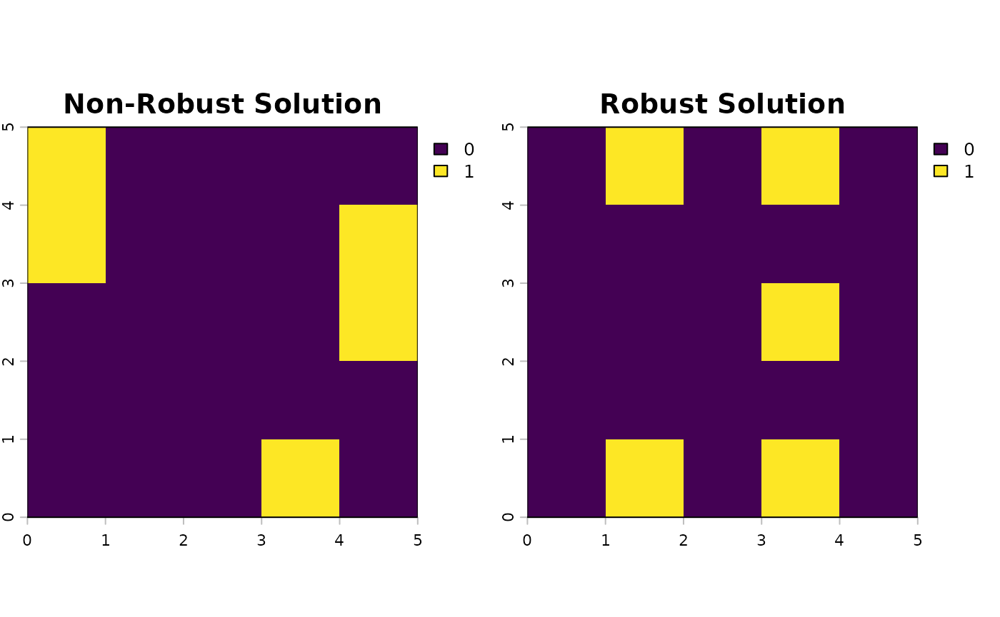
Here, the budget is constrained tightly at 5 cells. Robustness is typically achieved by selecting more planning units. Therefore, even though a robust solution is used, the solution did not improve much.
representation_summary <- eval_feature_representation_summary(p6, s6)
expected_robust_target <- representation_summary %>%
filter(substr(feature, 0, 2) == 'f1') %>%
summarise(absolute_held = min(absolute_held))
expected_robust_target <- as.numeric(expected_robust_target)
feature_1_targets <- values(sim_feature_1 * s5) %>%
apply(2, sum) %>%
unname
feature_1_targets_robust <- values(sim_feature_1 * s6) %>%
apply(2, sum) %>%
unname
plot_df <- data.frame(`not_robust` = unname(feature_1_targets),
`robust` = unname(feature_1_targets_robust)) %>%
tidyr::pivot_longer(c('not_robust', 'robust'), names_to = 'name', values_to = 'values') %>%
mutate(name = factor(name, c('not_robust', 'robust'), c('Not Robust', 'Robust'))) %>%
mutate(violated = if_else(values < target, "Violated", "Not violated")) %>%
mutate(violated = factor(violated, c("Violated", "Not violated")))
plot_df %>%
ggplot(aes(x = values, fill = violated)) +
geom_histogram(color = 'white', bins = 30) +
theme_bw() +
geom_vline(xintercept = target, linetype = 2) +
geom_vline(data = filter(plot_df, name == 'Not Robust'), aes(xintercept = expected_target),
color = '#009e73') +
geom_vline(data = filter(plot_df, name == 'Robust'), aes(xintercept = expected_robust_target),
color = '#0072b2') +
scale_fill_manual('', values = c('#d55e00', '#0072b2'), drop = FALSE) +
facet_wrap(vars(name), ncol = 1) +
theme(panel.grid = element_blank())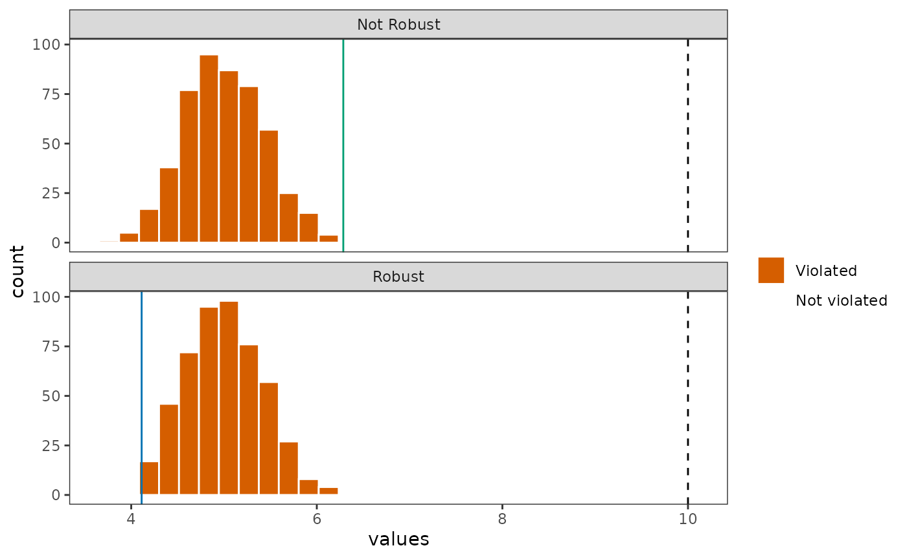
We can see that the distribution of outcomes did not change much in
this case. This is because the budget is tightly constrained, which
means that even the robust approach is not able to find a solution
within the budget that reduces the total amount of shortfall for
feature_1.
Conclusion
robust.prioritizr extends upon a list of popular
objective functions in prioritizr to incorporate robust
constraints, and must be used in conjunction with other
prioritizr functions. To get started with formulating your
own spatial conservation planning problem, the user is recommended to
follow the guides in the prioritizr documentation first,
prototyping a first version of the planning problem without robust
constraints first, and then gradually updating the problem specification
with robust constraints in this package.